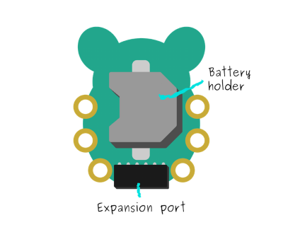

2015-08-11 - Nº 15
Editorial
Aqui está a Newsletter Nº 15 no seu formato habitual.
Esta Newsletter encontra-se mais uma vez disponível no sistema documenta do altLab. Todas as Newsletters encontram-se indexadas no link.
Esta Newsletter tem os seguintes tópicos:
- Novidades da Semana
- Ciência e Tecnologia
- Cursos MOOC
- Modelos 3D
- Open Source
- Circuitos
- Gadget em Destaque
- Artigo do Maker
- Compras
Hoje a Google anunciou que passa a ter uma companhia chapéu designada por Alphabet - vamos ver o que aí vem. Nesta Newsletter iremos ver um jogo de Tetris e de Snake que funciona numa TV, no artigo de maker. Iremos falar de circuitos com comparadores e construir um circuito de luz nocturna. Falaremos na rubrica open source de uma ferramenta de desenho CAD designada por FreeCAD. Por fim iremos falar de um Gadget que me chegou no correio - o CodeBug.
 João Alves ([email protected])
João Alves ([email protected])
O conteúdo da Newsletter encontra-se sob a licença  Creative Commons Attribution-NonCommercial-ShareAlike 4.0 International License.
Creative Commons Attribution-NonCommercial-ShareAlike 4.0 International License.
Novidades da Semana ^
Cypress – Tiny new nonvolatile RAM simplifies designs by eliminating batteries (nvSRAM)
"Cypress adds a new interface to its industry-leading nonvolatile RAM (NVRAM) portfolio. The 1Mb Quad Serial Peripheral Interface (SPI) nvSRAM meets the data throughput performance of 45-ns, high-speed parallel NVRAM with the reduced pin count of a 16-pin SOIC package and 24-ball BGA package. Cypress nvSRAM solutions reliably store data on power loss without the use of batteries, reducing system cost and maintaining RoHS compliance. The 1Mb Quad SPI nvSRAM is available with an optional integrated Real Time Clock (RTC) and an extended industrial temperature grade of -40C to 105C."
Airbus just patented a hypersonic jet that would fly from NYC to London in 1 hour
"A new hypersonic jet design from Airbus, which was just approved by the US Patents and Trademark Office, looks to create something of a successor to the now-retired Concorde. But, rather than flying at a measly Mach 2, the proposed rocket-powered Concorde 2.0 would traverse the skies at Mach 4.5. That’s four and a half times the speed of sound – some 3000mph – and it could take passengers from NYC to London in just one hour. The Airbus patent for an “ultra-rapid air vehicle and related method of aerial locomotion” shows a jet that would be powered by three different engines working sequentially to get the craft up in the air, to its cruising altitude, and then to its insanely-fast cruising speed."
-
"As Sergey and I wrote in the original founders letter 11 years ago, “Google is not a conventional company. We do not intend to become one.” As part of that, we also said that you could expect us to make “smaller bets in areas that might seem very speculative or even strange when compared to our current businesses.” From the start, we’ve always strived to do more, and to do important and meaningful things with the resources we have. We did a lot of things that seemed crazy at the time. Many of those crazy things now have over a billion users, like Google Maps, YouTube, Chrome, and Android. And we haven’t stopped there. We are still trying to do things other people think are crazy but we are super excited about. We’ve long believed that over time companies tend to get comfortable doing the same thing, just making incremental changes. But in the technology industry, where revolutionary ideas drive the next big growth areas, you need to be a bit uncomfortable to stay relevant. Our company is operating well today, but we think we can make it cleaner and more accountable. So we are creating a new company, called Alphabet. I am really excited to be running Alphabet as CEO with help from my capable partner, Sergey, as President. What is Alphabet? Alphabet is mostly a collection of companies. The largest of which, of course, is Google. This newer Google is a bit slimmed down, with the companies that are pretty far afield of our main internet products contained in Alphabet instead. What do we mean by far afield? Good examples are our health efforts: Life Sciences (that works on the glucose-sensing contact lens), and Calico (focused on longevity). Fundamentally, we believe this allows us more management scale, as we can run things independently that aren’t very related."
Ciência e Tecnologia ^
-

"CEI’s GaN transistors have at least one-tenth the resistance of such silicon-based transistors, according to the company. This allows for much higher energy-efficiency, and orders-of-magnitude faster switching frequency — meaning power-electronics systems with these components can be made much smaller. CEI is using its transistors to enable power electronics that will make data centers less energy-intensive, electric cars cheaper and more powerful, and laptop power adapters one- third the size — or even small enough to fit inside the computer itself."
-
"Monolithic semiconductor lasers capable of emitting over the full visible-colour spectrum have a wide range of important applications, such as solid-state lighting, full-colour displays, visible colour communications and multi-colour fluorescence sensing. The ultimate form of such a light source would be a monolithic white laser. However, realizing such a device has been challenging because of intrinsic difficulties in achieving epitaxial growth of the mismatched materials required for different colour emission. Here, we demonstrate a monolithic multi-segment semiconductor nanosheet based on a quaternary alloy of ZnCdSSe that simultaneously lases in the red, green and blue. This is made possible by a novel nanomaterial growth strategy that enables separate control of the composition, morphology and therefore bandgaps of the segments. Our nanolaser can be dynamically tuned to emit over the full visible-colour range, covering 70% more perceptible colours than the most commonly used illuminants."
Two Great Photovoltaic Materials Brought Together Make Better LEDs
"Ted Sargent at the University of Toronto has built a reputation over the years as being a prominent advocate for the use of quantum dots in photovoltaics. Sargent has even penned a piece for IEEE Spectrum covering the topic, and this blog has covered his record breaking efforts at boosting the conversion efficiency of quantum dot-based photovoltaics a few times."
Cursos MOOC ^
- An Introduction to Interactive Programming in Python (Part 1) - Começa a 29 de Agosto.
- An Introduction to Interactive Programming in Python (Part 2) - Começa a 29 de Agosto.
- Technology Entrepreneurship - Começa a 16 de Setembro.
- Begin Robotics - Começa a 21 de Setembro.
Modelos 3D ^
Com a disponibilidade de ferramentas que permitem dar azo a nossa imaginação na criação de peças 3D e espaços como o thingiverse para as publicar, esta rubrica apresenta alguns modelos selecionados que poderão ser úteis.
Coin Holder (http://www.thingiverse.com/thing:48248)
Euro, USD and Swiss Francs Coin Holders.
Binary Coins (http://www.thingiverse.com/thing:957569)
I was at workshop for CS50AP in Redmond. During the discussion on binary someone mentioned a lesson they do using coins with binary values as a way to begin. That is to say there is a 1, 2, 4, and so on. They are only given one of each coin. Students are told they will be going to a candy store and must pay in exact change. They quickly realize that no matter what the price (up to a maximum) they can always pay in exact change.
I decided I needed a set. Although, I might use them slightly differently. In my scenario I might turn them into bus tokens for a new transit system going in. Like any bus they must pay in exact change and the price of a ride depends on a variety of factors, but ranges from $0.01 to $2.50. The question would be, "What is the minimum number of coins you would need to be able to make any ride?" I'd print three or four sets and mix them together and give them to the students.
Symbolic Buttons (http://www.thingiverse.com/thing:15941)
I liked jetty's new buttons, but I thought the X's looked too much like H's, and I like symbols better anyway, so this is the result.
Open Source ^
FreeCAD
A ferramenta open source da semana é o FreeCAD. Esta ferramenta é um modelador paramétrico 3D. A modelação paramétrica permite que facilmente seja feita a mudança de um desenho navegando para trás no histórico do modelo e mudando os parâmetros.
Encontra-se atualmente na versão 0.15 que foi lançada a 8 de Abril de 2015 e está disponível para Windows, Ubuntu, MAC OSX e Fedora. O FreeCAD pode ser descarregado deste site.
Sendo uma ferramenta multi-plataforma é permite ser usada por perfis distintos de utilizador. Desde o utilizador caseiro, passando pelo utilizador CAD experiente, pelo programador e até pelo professor.
As principais funcionalidades da ferramenta são:
- Uma tecnologia "Open CASCADE" permitindo complexas operações 3m 3D em diversos tipos de formas.
- Um modelo paramétrico completo. Todos os objectos FreeCAD são nativamente paramétricos, o que significa que a sua forma é baseada em propriedades ou dependências de outros objectos. Novos objetos podem ser facilmente adicionados e podem inclusivamente ser programados em Python.
- Arquitetura modular que permite que módulos (plugins) acrescentem funcionalidades à base da aplicação. Estas extensões podem ser tão complexas como novas aplicações programadas em C++, simples scripts em Python ou macros gravadas.
- Importação e Exportação para formatos standard como STEP, IGES, OBJ, STL, DXF, SVG, DAE, IFC, OFF, NASTRAN e VRML adicionalmente ao formato nativo Fcstd.
- Um sketcher com resolução de restrições. permitindo sketchs com restrições em 2D.
- Uma simulação de Robos que permite estudar os movimentos dos mesmos.
- Folhas de desenho que permitem colocar vistas 2D dos modelos 3D em folhas. Estes módulos permite exportar para SVG ou PDF.
- Um modulo de "Renderização" que permite a exportação de objectos 3D para serem renderizados por "renderizadores" externos. Atualmente apenas são suportados o povray e o LuxRender.
- Um modulo de arquitetura que permite a implementação de workflows tipo BIM com compatibilidade com IFC.
Funcionalidades Gerais:
- Multi-plataforma: Suporta Windows, Linux e MAC OSX.
- Aplicação com um GUI baseado na framework Qt com um visualizador 3D baseado no Open Inventor permitindo a renderização rápida de cenas 3D.
- Tem suporte de linha de comando. Permite que seja executado com servidor para preparar conteúdo para outras aplicações.
- Pode ser importado como um modulo Python dentro de outras aplicações que podem executar scripts Python.
- Conceito de Workbench: no interface do FreeCAD as ferramentas são agrupadas por workbenches.
- Framework de Módulos/Plugins que permitem o carregamento tardio de funcionalidades/tipo de dados.
- Objectos definíveis por parâmetros.
- Criação de primitivas paramétricas.
- Operações de modificação gráfica como translação, rotação, escalam espelho, deslocação ou mudança de forma, em qualquer plano de 3D.
- Operações booleanas (uniões, diferenças e intersecções).
- Criação gráfica de geometria planar simples como linhas, fios, rectângulos, arcos, círculos em qualquer plano 3D.
- Modelação com extrusões, secções ou laços.
- Componentes topológicos como vértices, arestas, wires e planos (através de scripts em Python).
- Ferramentas de teste e reparação de malhas: teste de sólidos, testes de estanquicidade, testes de intersecção, enchimento de buracos e orientação uniforme.
- Anotações como textos e dimensões.
- Framework de Undo/Redo.
- Gestão de transacções.
- Framework de scripts embutida: O FreeCAD tem um interpretador de Python incorporado, e uma API que cobre quase todos os aspectos da aplicação, do interface, da geometria e da apresentação no visualizador 3D.
- Consola Python.
- Interação do utilizador espelhada na consola: tudo o que é feito no interface é apresentado como comando na consola.
- Suporte integral de Macros para gravação e edição.
- O tipo nativo de formato de gravação é baseado em ZIP e armazena diferentes tipos de informação como geometria, scripts e icons miniatura.
- Toda a interface é configurável e scriptável.
Links úteis:
- FreeCAD Tutorial: How to Make a 3D Model
- How to 3D Print Text with FreeCAD
- More videotutorials on Youtube
Circuitos ^
Aqui é apresentado um circuito simples que poderá ser construído com componentes.
Comparador - Luz Nocturna
No circuito desta Newsletter iremos construir um comparador de tensões usando um integrado designado por LM393.
O LM393 é um comparador de diferenças dual. Isto significa que tem dois comparadores de tensão independentes.
O circuito compara as tensões de entrada e detecta qual é a que tem o maior valor. Com base nessa informação, são tomadas decisões que podem ser com base no que tem a entrada de maior valor ou menor. Um comparador é muito útil em circuitos onde é necessário medir níveis e se pretende que o circuito atue de determinada forma com base no valor da entrada seja maior ou menor que um determinado intervalo.
O circuito construído é um sistema básico de luz nocturna, que é um circuito que acende o LED quando está escuro. Irá ser usado uma Foto-resistência para se observar a existência/ausência de luz. Este tipo de resistência tem valores distintos quando lhe incide a luz ou quando está escuro. Quando a superfície da Foto-resistência se encontra no escuro a resistência do mesmo é muito alta. Quando exposto à luz a resistência é baixa.
A voltagem que passa por um componente é diretamente proporcional à resistência que o componente oferece. Nesse sentido foi montado um circuito divisor de tensão com a Foto-resistência e uma resistência de valor fixo, quando é colocado no escuro a Foto-resistência irá consumir a maioria da voltagem, uma vez que como já foi dito existe uma resistência bastante alta no escuro. Quando colocado à luz, a foto-resistência apenas consumirá um pequena parte da voltagem, partindo do pressuposto que a resistência fixa é bastante maior que o valor da foto-resistência. Se for dada uma boa voltagem de referencia como entrada ao pino não invertido do op amp, e a voltagem da foto-resistência for acima da da referencia quando exposto ao escuro e abaixo da voltagem de referencia quando exposto à luz, criou-se um circuito de comparação útil que tem um resultado diferente quando existe luz e quando está escuro (o LED acenderá quando está escuro e ficará apagado quando existe luz).
E por isso é que este tipo de circuitos comparadores são muito úteis. Eles são leitores de níveis de tensão e desligam fora de um determinado intervalo de valores.
Este circuito foi baseado no circuito que se encontra no seguinte link.
Esquemático
Componentes (BOM):
Circuito 1:
- 1x LM393 (U1)
- 1x Resistência de 39K Ohms (R1)
- 1x Resistência de 330 Ohms (R2)
- 1x Foto-resistência (R3)
- 1x Potenciómetro 10K (RV1)
- 1x LED 5mm (D1)
Pin-out dos IC
Links úteis:
Gadget em Destaque ^
Vamos analisar um gadget.
CodeBug
O Gadget da semana é uma placa que foi criada com o intuito de promover o gosto pela programação entre os jovens e que teve uma campanha de Kickstarter. Trata-se de uma pequena placa designada por CodeBug.

Esta placa tem as seguintes características:
- Micro-controlador Microchip PIC18F com suporte USB
- 25 LEDs vermelhos dispostos em matriz
- 6 pontos ligação externos com 4 pinos de I/O incluindo analógicos, energia e GND
- Energia através de microUSB ou Baterias
- Suporte de bateria CR2032
- Tecnologia Smart Sleep
- Porto de expansão com 4 pinos I/O (Configuráveis como UART, SPI ou I2C)
- Programação simples através do Blocky - programação drap-n-drop no browser.
- 2 botões de entrada
Esta placa custou cerca de 20 € na campanha.
Para que se possa usar a placa basta ter um cabo USB com ficha microUSB. A programação é feita no browser, acedendo ao site do codebug.
Também é possível ver o código na tab Code Viewer:
codebug_direction('U');
codebug_sleepafter(3);
io_configure(0, 1);
io_configure(1, 1);
io_configure(2, 1);
io_configure(3, 1);
io_configure_pullup(0, 0);
io_configure_pullup(2, 0);
io_configure_pullup(3, 0);
fivebyfivedisplay.sprite_scroll((new StringSprite('altLab!', 'R')), 100, 'L');
Depois de ter o programa feito pode-se descarregar o mesmo no botão de Download.
De seguida no mesmo momento que se liga o cabo USB carrega-se no botão A. Esta operação vai tornar o dispositivo numa PEN Drive expondo a mesma ao Sistema.
Nessa altura copia-se o ficheiro com a extensão "cbg" para a Drive "Codebug".

Posteriormente carrega-se no Botão B para executar o programa.
Agora é escrever programas.....
Artigo do Maker ^
Projeto interessante publicado por um maker.
AVR TV Game
O projeto de maker da semana foi feito pelo Ben Ryves e apresenta-nos um circuito que permite jogar dois jogos - Tetris e Snake - numa PAL TV. Os detalhes do mesmo encontram-se publicados no site do Ben benryves.com.
Entretanto outro maker - Martin Šustek, pegou na ideia do Ben e acrescentou um jogo de Sokoban - Link
Os vídeos publicados no youtube Tetris, Snake e Sokoban apresentam o projeto a funcionar.
Esquemático
Este é circuito usado para construir o projeto.
O projeto usa duas resistências para formar um DAC de 2-bits para gerar as tensões necessárias para o vídeo composto - 0V para a sincronização, 0.3V para o preto e 1V para o branco. Assumindo uma resistência de 75 Ohms na televisão o valor ideal de resistência é entre os 450 Ohms e os 900 Ohms, no entanto podem ser usados 470 Ohms e 1K Ohms. O ATmega tem que trabalhar a 20Mhz.
Imagens do projeto
O projeto foi colocado numa caixa que apresenta o jack RCA para o vídeo um socket DC e um botão de energia.
Graças à simplicidade do circuito grande parte do conteúdo da caixa é usado com fios. O Header junto ao ATmega pode ser usado para atualizar o software.
Código
O código foi compilado no Eclipse com o "AVR Eclipse Plugin". O Compilador usado foi o gcc-avr. O Código original pode ser descarregado daqui a versão com o sokoban daqui.
Este projeto usa a a biblioteca tvText que se encontra neste link.
O Código do main.c é o seguinte:
#include <stdlib.h>
#include <string.h>
#include <avr/io.h>
#include <avr/interrupt.h>
#include <avr/pgmspace.h>
#include "tvtext/tvtext.h"
#include "joypad.h"
#include "rectangle.h"
#include "scroll.h"
#include "tetris.h"
#include "snake.h"
#include "options.h"
#include "gamepreviews.h"
// Position of the game selection rectangle.
#define GAME_SELECTION_LEFT 11
#define GAME_SELECTION_TOP 3
#define GAME_SELECTION_BOTTOM (GAME_SELECTION_TOP + 8)
#define GAME_SELECTION_RIGHT (GAME_SELECTION_LEFT + 10)
// Position of the game preview graphic.
#define GAME_PREVIEW_LEFT 4
#define GAME_PREVIEW_TOP 4
// Number of games.
#define GAME_COUNT 3
// Draws a preview box for a particular game.
void draw_game_preview(uint8_t game, int8_t y_offset) {
uint16_t i = game * 5 * 7;
int8_t y = y_offset + GAME_PREVIEW_TOP - 1;
for (int8_t r = -1; r < 8; ++r) {
for (uint8_t c = 0; c < 5; ++c) {
char preview_c = (r >= 0 && r < 7) ? pgm_read_byte(game_previews + i++) : ' ';
if (y >= 0 && y < 16) {
tvtext_buffer[y * TVTEXT_BUFFER_WIDTH + c + GAME_PREVIEW_LEFT] = preview_c;
}
}
++y;
}
}
int main(void) {
// Initialise the joypad.
JOY_PORT |= JOY_ALL;
// Initialise the tvText library.
tvtext_init();
tvtext_flags &= ~_BV(TVTEXT_CURSOR_ENABLED);
tvtext_flags |= _BV(TVTEXT_INVERTED);
// Selected game index.
uint8_t selected_game = 0;
for (;;) {
// Wait for all keys to be released.
while (~JOY_PIN & JOY_ALL);
// Draw the selection menu.
tvtext_clear();
draw_rounded_rectangle(GAME_SELECTION_LEFT, GAME_SELECTION_TOP, GAME_SELECTION_RIGHT, GAME_SELECTION_BOTTOM);
tvtext_cursor_move(GAME_SELECTION_LEFT + 2, GAME_SELECTION_TOP + 2);
tvtext_puts_P(PSTR("Tetris"));
tvtext_cursor_move(GAME_SELECTION_LEFT + 2, GAME_SELECTION_TOP + 4);
tvtext_puts_P(PSTR("Snake"));
tvtext_cursor_move(GAME_SELECTION_LEFT + 2, GAME_SELECTION_TOP + 6);
tvtext_puts_P(PSTR("Options"));
// Preload the joypad input value.
uint8_t joypad = ~JOY_PIN & JOY_ALL;
uint8_t old_joypad = joypad;
// Used to animate the swapping of game graphics.
int8_t swap_game_scroll = 0;
// We're still choosing a game...
uint8_t choosing_game = 1;
while (choosing_game) {
// Wait for sync.
tvtext_wait_vsync();
// Clear the current game rectangle.
clear_rectangle(GAME_SELECTION_LEFT + 1, GAME_SELECTION_TOP + 1 + 2 * selected_game, GAME_SELECTION_RIGHT - 1, GAME_SELECTION_TOP + 3 + 2 * selected_game);
// Poll the joypad.
joypad = ~JOY_PIN & JOY_ALL;
if ((joypad == old_joypad) || (swap_game_scroll != 0)) {
joypad = JOY_NONE;
} else {
old_joypad = joypad;
}
// Handle the joypad.
switch (joypad & (JOY_UP | JOY_DOWN)) {
case JOY_UP:
selected_game += (GAME_COUNT - 1);
swap_game_scroll = -16;
break;
case JOY_DOWN:
++selected_game;
swap_game_scroll = +16;
break;
}
selected_game %= GAME_COUNT;
// Have we selected a game?
choosing_game = !(joypad & JOY_FIRE1);
// Draw the new selected game rectangle.
draw_animated_rectangle(GAME_SELECTION_LEFT + 1, GAME_SELECTION_TOP + 1 + 2 * selected_game, GAME_SELECTION_RIGHT - 1, GAME_SELECTION_TOP + 3 + 2 * selected_game, tvtext_frame_counter / 4);
// Draw the game preview graphic.
draw_game_preview(selected_game, swap_game_scroll);
if (swap_game_scroll > 0) {
draw_game_preview((selected_game + (GAME_COUNT - 1)) % GAME_COUNT, swap_game_scroll - 16);
--swap_game_scroll;
} else if (swap_game_scroll < 0) {
draw_game_preview((selected_game + 1) % GAME_COUNT, swap_game_scroll + 16);
++swap_game_scroll;
}
}
// Scroll out the menu.
scroll_out();
tvtext_clear();
tvtext_offset_y -= (128 + 8) * 2;
// Run the selected game.
switch (selected_game) {
case 0:
tetris();
break;
case 1:
snake();
break;
case 2:
options();
break;
}
}
}
Outros artigos/projetos interessantes de ler:
- tvText
- Moldover's Light-Theremin CD (DIY version)
- LED Fiber Optic Jellyfish Skirt
- Arduino Watch With Altitude, Temperature, Compass And Pedometer!
- Mini weather station with Attiny85
- Arduino Seizure Alarm
Compras ^
Artigos do ebay ou de outras lojas online que poderão ser úteis em projetos.
20PCS LM339N LM339 IC LOW POWER QUAD VOLTAGE COMPARATORS NEW S3
(http://www.ebay.co.uk/itm/191658277510) - US $1.88
20 x LM339N LM339 IC LOW POWER QUAD VOLTAGE COMPARATORS
Description:
- Manufacturer Part No: LM339N
- Package / Case: PDIP-14
- RoHS : Yes
- Product Category: Comparator ICs
- Number of Channels: 4
- Output Type: Open Collector
- Response Time: 1.3 us
- Supply Voltage (Max): 32 V
- Supply Voltage (Min): 2 V
- Supply Current (Max): 2 mA
- Maximum Operating Temperature: 70 C
- Minimum Operating Temperature: 0 C
20×Photoresistor Light-Dependent Sensitive Inductor Photo Resistor GL5516 Hot
(http://www.ebay.co.uk/itm/181757705847) - £0.99
Item Description:
- Condition: New
- 20 x Light Sensitive Resistor Module
- Maximum voltage: (V-DC) 150
- Max power consumption(mw):100
- Environment temperature:-30~70
- Spectral peak(nm):540
- Brightresistance(10lux)(k):30-90
- Dark resistance(m):5
- Responsive time: up:20, down:30
- Illumination resistance characteristics:5
- Color is shown as pictures
1% Metal Film 30 Kind 1/4W Resistance Resistor Assorted Kit Each 20 Total 600pcs
(http://www.ebay.co.uk/itm/360643655540) - US $2.86
Description
- 100% brand new and high quality
- Experimental resistance package
- 1/4W metal film resistor package
- 1% precision
- 1% error
- 30 kinds of resistance
- Each of 20Pcs
- The specifications are as follows: 10Ω, 22Ω, 47Ω, 100Ω, 150Ω, 200Ω, 220Ω, 270Ω, 330Ω, 470Ω, 510Ω, 680Ω, 1KΩ, 2KΩ, 2.2KΩ, 3.3KΩ, 4.7KΩ, 5.1KΩ, 6.8KΩ, 10KΩ, 20KΩ, 47KΩ, 51KΩ, 68KΩ, 100KΩ, 220KΩ, 300KΩ, 470KΩ, 680KΩ, 1M
- Colored ring
- Accuracy of 1%
- A row: 20Pcs
- Each row are written in resistance value, can be better for identify and select
Package includes:
- 30 Kind 1/4W Resistance 1% Metal Film Resistor Assorted Kit Each 20 Total 600pcs x 1
0-30V 2mA - 3A Adjustable DC Regulated Power Supply DIY Kit Short Circuit Current Limiting Protection
(http://www.banggood.com/0-30V-2mA-3A-Adjustable-DC-Regulated-Power-Supply-DIY-Kit-p-958308.html) - 9,69 €
Description:
This circuit voltage can be from 0 v, output current can be ma from 2 to 3 a continuously adjustable, set the output current, if the experiment circuit exceeds the current (including short circuit), the circuit protection immediately, not cause danger such as burning device, it is electronic manufacture's right-hand man. It is never afraid of the fireworks! Like making all kinds of audio circuit friend, often due to the different working voltage and circuit have a headache, this circuit can also two series into a dual power supply, can meet the needs of all sorts of use.
Feature:
- Input voltage: 24V AC
- Input current: 3A maximum
- Output voltage: 0 to 30V continuous adjustable
- Output current: 2mA - 3A continuously adjustable
- output voltage ripple: minimum 0.01%
- All straight inserted element, make easy, only an adjustable components ( used to adjust the voltage of 0 v )
- LED indicator for output over current, when the current exceeds the set data circuit protection, LED lighting, over load and short circuit protection Minimum current (2mA) under the measurable leds and zener diode
Notice:
Power production belongs to the high voltage large current circuit, please be sure to carefully, otherwise may cause harm to the personal safety
Package included:
1 x Adjustable DC Regulated Power Supply DIY Kit
That's all Folks!